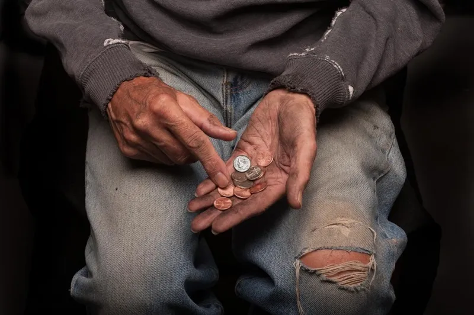
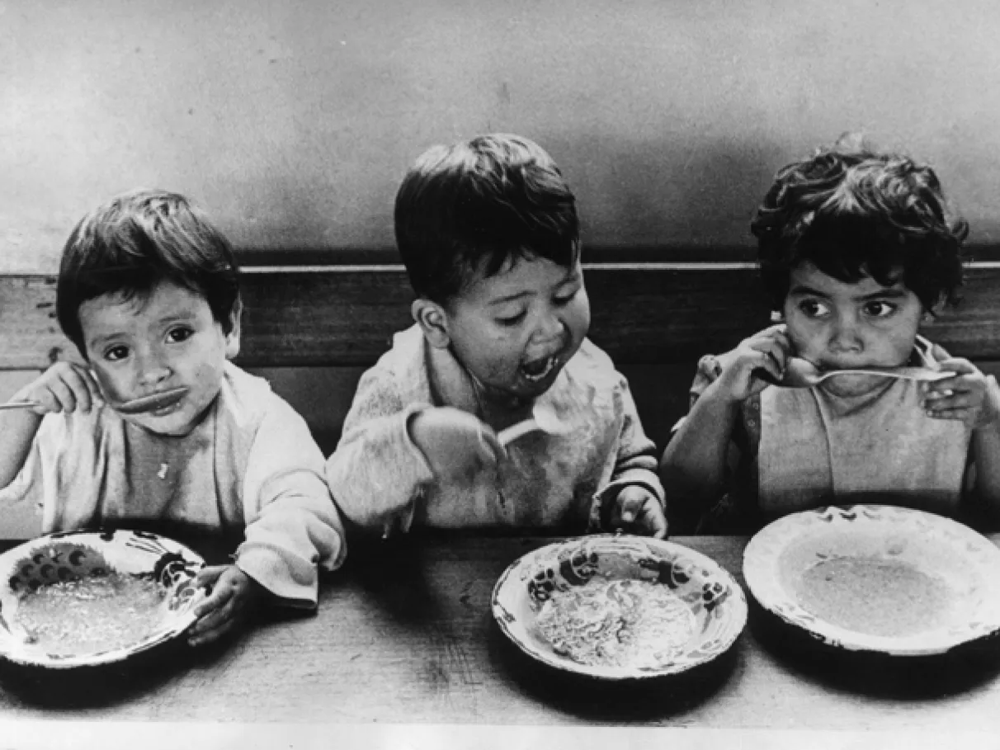
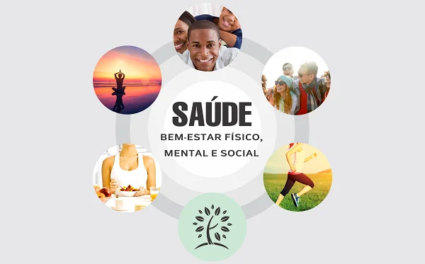
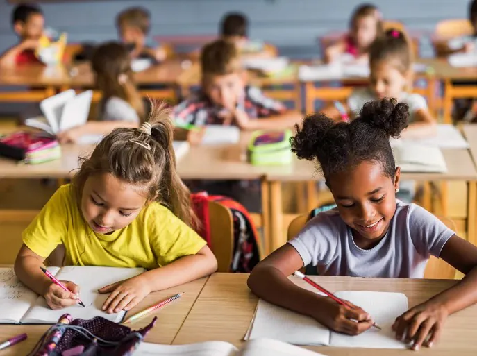

Sobre o Projeto
Este projeto visa promover práticas sustentáveis na comunidade, utilizando tecnologias acessíveis.
ALUNO: BRUNO SILVA DOS ANJOS.
DDD
DISCIPLINA: LABORATÓRIO DE DESENVOLVIMENTO DE SOFTWARE.
Recursos Principais
- Erradicação da pobreza
- Erradicação da fome
- Saúde e bem-estar
- Educação de qualidade
Erradicação da Pobreza

A ODS 1 visa acabar com a pobreza em todas as suas formas, em todos os lugares, até 2030, assegurando que todos os homens e mulheres, especialmente os pobres e vulneráveis, tenham os mesmos direitos aos recursos econômicos, além de acesso a serviços básicos, terra, propriedade e outras formas de empoderamento social.
Erradicação da Fome

A ODS 2 busca acabar com a fome, alcançar a segurança alimentar e melhoria da nutrição, e promover a agricultura sustentável. É essencial garantir o acesso seguro, nutritivo e suficiente a alimentos durante todo o ano para todas as pessoas.
Saúde e Bem-Estar

A ODS 3 visa assegurar uma vida saudável e promover o bem-estar para todos, em todas as idades. Isso inclui reduzir a taxa global de mortalidade materna e infantil, combater doenças transmissíveis e não transmissíveis, e garantir o acesso universal aos serviços de saúde.
Educação de Qualidade

A ODS 4 visa assegurar a educação inclusiva, equitativa e de qualidade, e promover oportunidades de aprendizagem ao longo da vida para todos. Isso inclui garantir que todas as meninas e meninos completem o ensino primário e secundário livre, equitativo e de qualidade, levando a resultados de aprendizagem relevantes e eficazes.